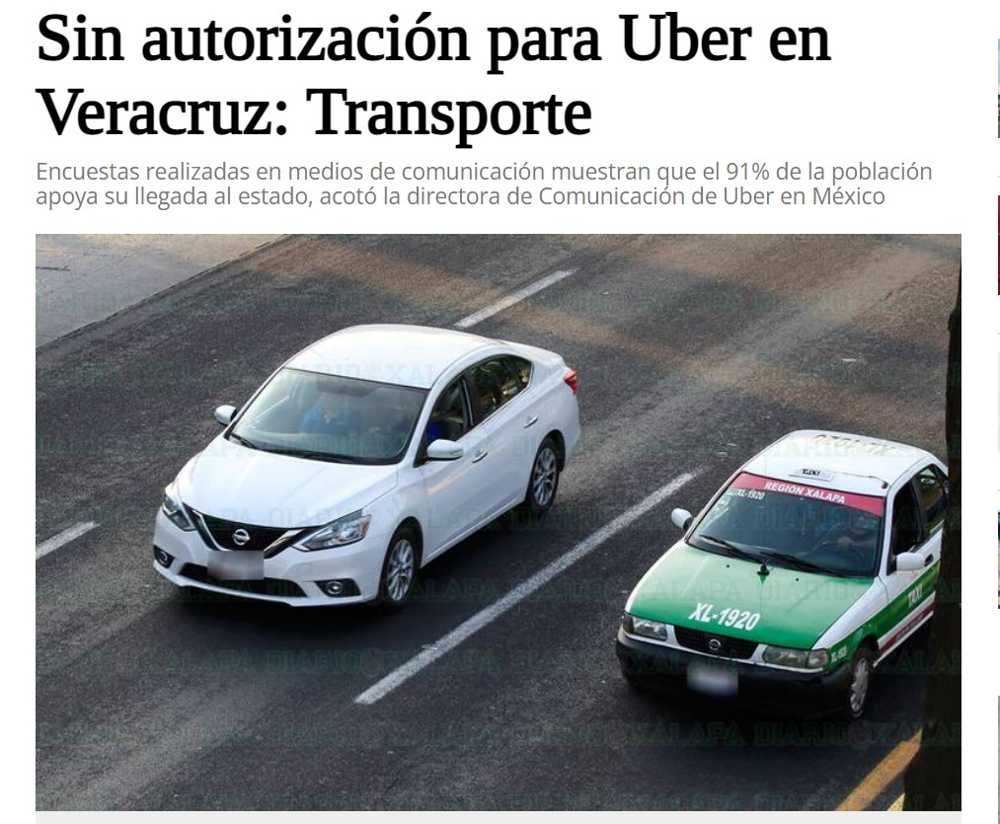
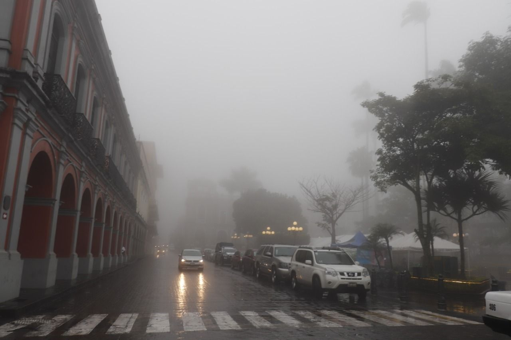

Seguridad
Desconozco las estadísticas exactas de la seguridad a lo largo del estado, pero como mínimo considero que Córdoba, Coatzacoalcos
y Xalapa son las peores para ser un adolescente o en general una persona joven. Los secuestros abundan en estos 3 municipios. Veracruz no
tiene el tipo de violencia en donde rápidamente hay una asesinato, o balaceras; aunque sí tuvo tiempos donde sí sucedian estas cosas y
la gente tenía que estar en toque de queda, los secuestros es lo que siempre ha perdurado, principalmente con adolescentes y gente joven.
Recuerdo un tiempo donde solía haber índices de secuestros altos para mujeres que tuvieran el pelo largo. A una conocida le tocó que la
jalaron y a partir de ahí ella solo salía con gorra y chongo. Obviamente no tengo imágenes o videos de algún secuestro, pero tengo videos
que me pasaron de septiembre del año pasado en donde hubo bastantes altercados. Aunado a estos dos, había otro donde una persona con una
granada estaba siendo acorralada por los policias y amenzaba con explotarla, tuvieron que cerrar el boulevard y bloquear todas las rutas
de camiones hasta que arrestaron al tipo, pero el video no lo tengo.
Desarrollo
Otro tema que no es bueno para nadie en Veracruz es el tema del desarrollo como estado, realmente los únicos exponentes en el estado son
el puerto de Veracruz, y la exportación de café, los mariscos son un extra, pero los principales son los primeros dos que mencioné. Las
empresas nunca llegan a establecerse allá. Si una persona de la región de donde yo soy, es decir, si una persona de Córdoba, Orizaba,
Fortín, Chocamán, Zongolica, etc. desea atender una situación de reparación de computadora por ejemplo, usualmente tiene que ir a lugares
como Veracruz, Xalapa o a veces, cuando tampoco hay tiendas en estos lugares, toca ir hasta Puebla. Es complicado tener un trabajo bien
remunerado y estable. Como dato extra, en Veracruz y en Xalapa no hay uber, solo está el tranporte tradicional.

Clima
El clima es un tema que como ya expliqué en datos del clima, varía mucho dependiendo de la zona, al
menos es en lugar de donde yo soy, en Córdoba, el clima solía ser disfrutable hace unos 12 años, pero conforme más avanza el tiempo
realmente notamos que se pone peor. El viento caliente es insoportable, puedes estar en la sombra o dentro de algún restaurante o lo que
sea y el propio aire caliente te pone de malas, no dejas de sudar, en invierno ya casi no hay días fríos y a lo que más la gente se ha
quejado y donde más notamos que el clima realmente esta yendo de mal a peor es que la neblina ya casi no baja ni en lugares como Xalapa
que se supone son de los más fríos de Veracruz. Los animales buscan lugares frescos, yo recuerdo haber estado en mi recámara con el aire
acondicionado prendido y salir y ver que mis dos perros estaban tirados afuerita de la puerta para que el aire que salía de entre el piso
y la puerta les pudiera dar a ellos. En algún momento cuando iba en primaria nos tuvieron que prohibir salir a jugar en el recreo porque
los índices UV del sol. En resumen, el planeta se está echando a perder gracias al humano y sobretodo sus acciones en la industria que
consumen muchos recursos naturales y afectan otras áreas como ríos u océanos. Aquí muestro una imagen de cómo solía verse Córdoba con
neblina hace varios años.
